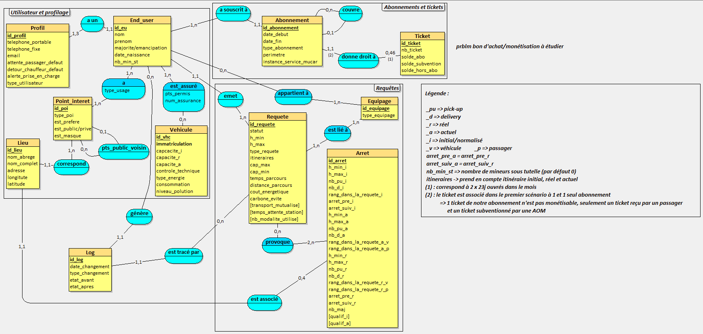
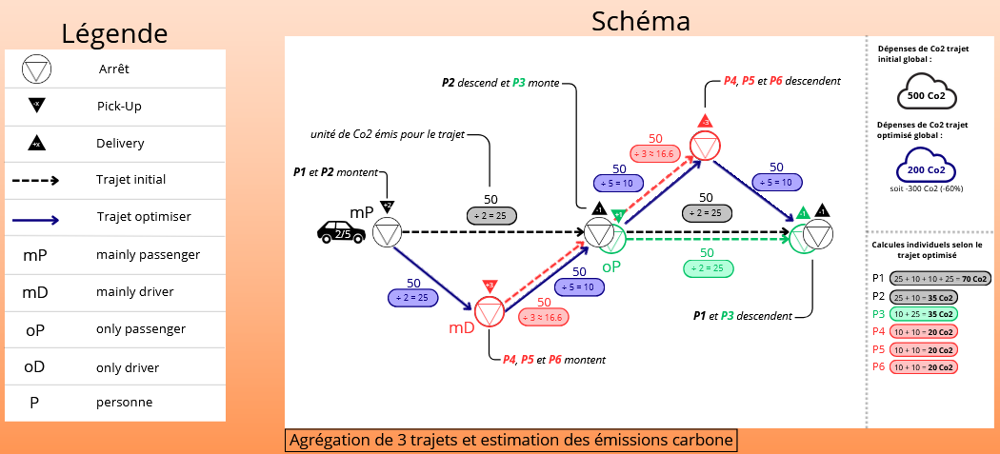

Savoir-faire Techniques
Cette section décrit mes compétences en conception de bases de données et en développement d'architectures d'ingestion logicielles, appliquées à la consolidation des données du projet Mu-CAR.
Savoir-faire élémentaires couverts :
- SF-BDD-1 : Traduire des règles métiers en contraintes d'intégrité physiques SQL.
- SF-BDD-2 : Modéliser et structurer des relations et des clés étrangères complexes (MCD).
- SF-DEV-1 : Développer des points d'accès (endpoints) API REST d'extraction et d'agrégation.
- SF-ARCHI-1 : Orchestrer et isoler des services applicatifs et de données via la conteneurisation Docker.
Trace 1 : Modèle Conceptuel de Données (MCD) de l'écosystème Mu-CAR

Descriptif général & place dans le stage : La Trace 1 représente le socle structurel de mon travail de conception. Afin de remédier aux problèmes d'échanges de données hétérogènes entre les outils des différents chercheurs travaillant sur ce sujet, j'ai réalisé ce Modèle Conceptuel de Données pour centraliser l'intégralité des informations de la zone pilote.
Utilisation des savoir-faire : J'ai mobilisé le savoir-faire SF-BDD-2 pour structurer des dépendances complexes. Au niveau du [CADRE REMARQUABLE A] de la Trace 1, on observe la décomposition de la table pivot des requêtes permettant d'associer de manière étanche un usager à un itinéraire précis tout en préservant l'historisation des changements grâce à l'entité isolée Log.
Trace 2 : Script DDL de robustesse de la base de données PostgreSQL
-- [POINT REMARQUABLE B : CONTRAINTE DE CAPACITÉ]
ALTER TABLE requete_trajet
ADD CONSTRAINT chk_capacite_vehicule
CHECK (nombre_passagers_reel <= capacite_maximale);
-- [POINT REMARQUABLE C : COHÉRENCE TEMPORELLE]
ALTER TABLE fenetre_horaire
ADD CONSTRAINT chk_coherence_horaire
CHECK (heure_debut <= heure_fin);
Légende Trace 2 : Extrait du script SQL physique implémentant les barrières de sécurité et les verrous de contraintes d'intégrité dans PostgreSQL.
Descriptif général & place dans le stage : La Trace 2 montre l'application physique directe du modèle conceptuel vu précédemment. Son but est d'empêcher l'injection de simulations aberrantes par les outils d'expérimentation tiers au sein de l'équipe.
Utilisation des savoir-faire : Pour sécuriser l'intégrité, j'ai appliqué le savoir-faire SF-BDD-1 en traduisant les contraintes métiers définies dans la légende de la Trace 1 en filtres physiques stricts. Le [POINT REMARQUABLE B] et le [POINT REMARQUABLE C] de la Trace 2 illustrent comment le SGBD rejette nativement toute incohérence temporelle ou surcharge de véhicule avant traitement algorithmique.
Trace 3 : Schéma de calcul et d'agrégation des gains de CO2

Descriptif général & place dans le stage : Mon début de démonstrateur basé sur le prototype du précédent stagiaire ayant été abandonné pour un nouveau démonstrateur actuellement en cours de développement, j'ai concentré mes efforts sur le développement de l'API backend MucarGen pour faire office de passerelle de données. Cette API extrait les flux bruts générés par l'outil de simulation graphique et s'appuie sur la logique métier illustrée par la Trace 3 pour alimenter de façon dynamique le tableau de bord environnemental.
Utilisation des savoir-faire : Pour donner corps à ce modèle visuel, j'ai utilisé le savoir-faire SF-DEV-1 en développant les points d'accès /api/v1/eco/global décrits dans la documentation technique (README) de mon dépôt. L'API traduit informatiquement le scénario de la Trace 3 en effectuant des calculs de regroupement SQL (SUM et COUNT sur la table Ticket visible sur le MCD) pour renvoyer au client le volume exact de carbone évité. Enfin, le savoir-faire SF-ARCHI-1 a été requis pour encapsuler cette logique et la base de données PostgreSQL associée dans un environnement virtuel reproductible grâce à Docker Compose.
Modélisation et implémentation de bases de données relationnelles (PostgreSQL)
Le défi majeur a été de transposer le diagramme conceptuel du projet Mu-CAR en tables physiques PostgreSQL fonctionnelles. J'ai dû implémenter des contraintes relationnelles fortes, notamment la gestion des historiques d'états (table Log), la liaison fine entre les profils de mobilité (Profil et End_user) et le suivi analytique des transactions (table Ticket). La complexité résidait dans l'automatisation des attributs temporels des requêtes conducteurs et passagers.
Développement d'API REST asynchrones (Node.js / Express)
N'ayant pas de brique API standard clé en main pour ce backend de transition, j'ai développé en autonomie l'application MucarGen. L'objectif principal était de lever l'architecture de simulation fictive (*MOCK*) du Front-end pour la connecter aux flux relationnels réels (routes /api/v1/stops et /api/v1/eco/global). J'ai dû apprendre à maîtriser l'asynchronisme de Node-Postgres (pg Pool) pour éviter les goulets d'étranglement lors des requêtes d'ingestion massives.
Évaluation du niveau - Ingénierie Backend & Base de données
Justification : Ce stage m'a permis de confronter mes connaissances académiques en SQL à une pratique plus exigeante. Je suis aujourd'hui capable de concevoir un schéma relationnel fonctionnel, de participer à l'isolation d'une application via Docker Compose, et d'exposer des routes d'API documentées. Une marge de progression importante subsiste concernant l'optimisation avancée des index (Index PG-GIS pour la géolocalisation) et la pleine autonomie sur des architectures complexes que je n'ai fait qu'effleurer.